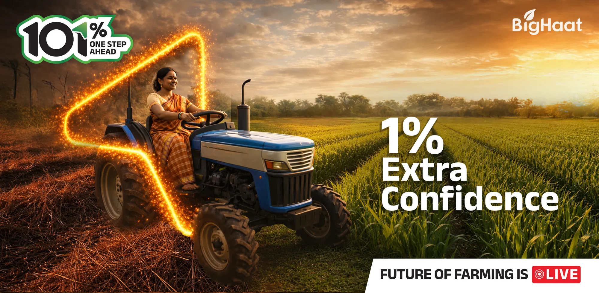
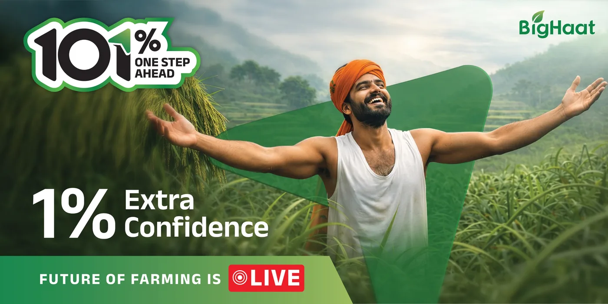
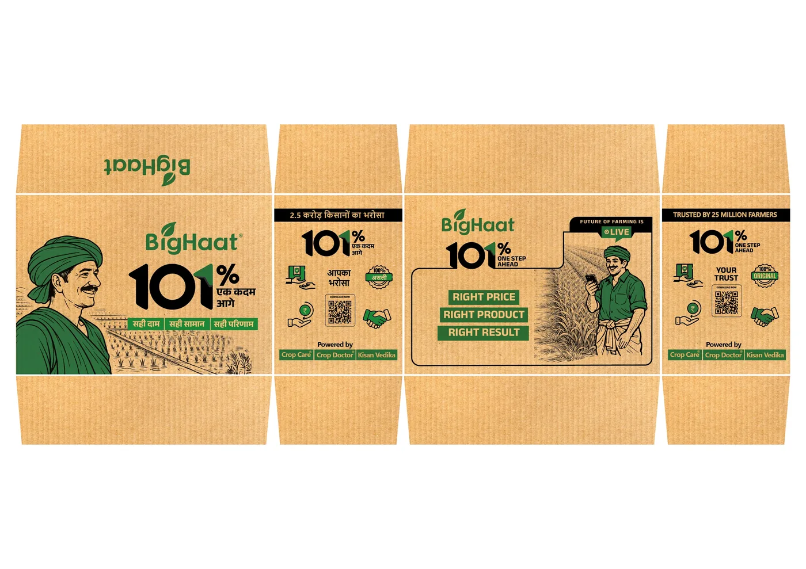
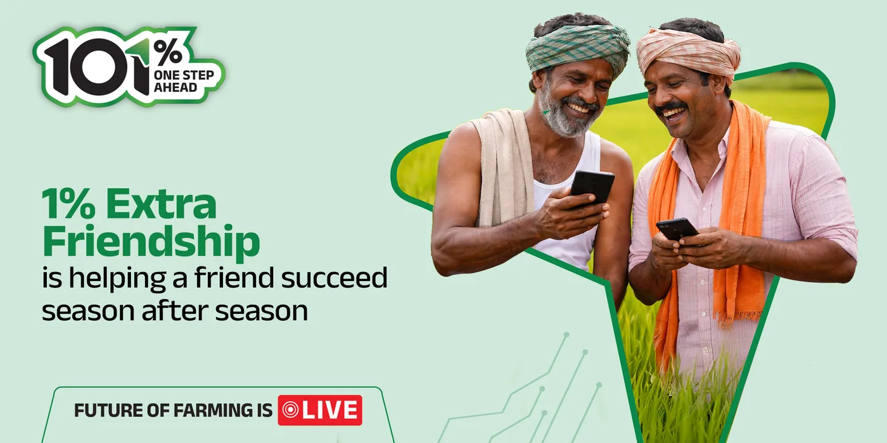
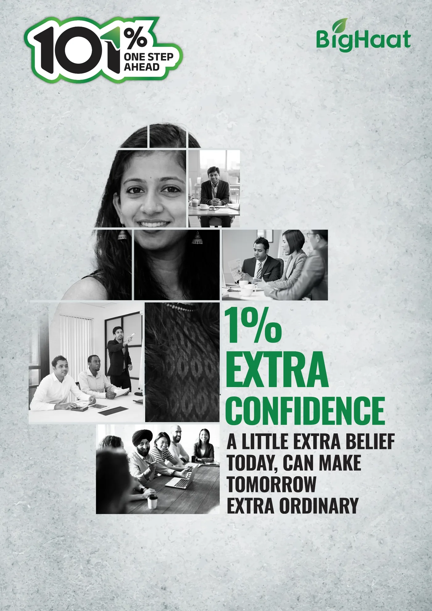
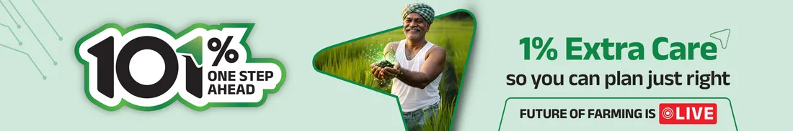
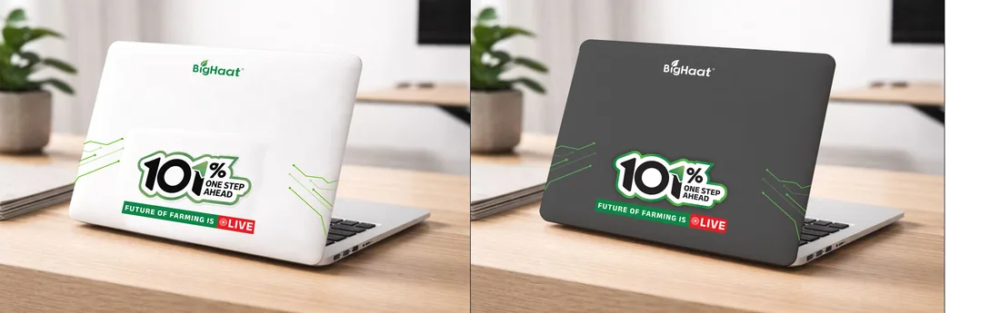
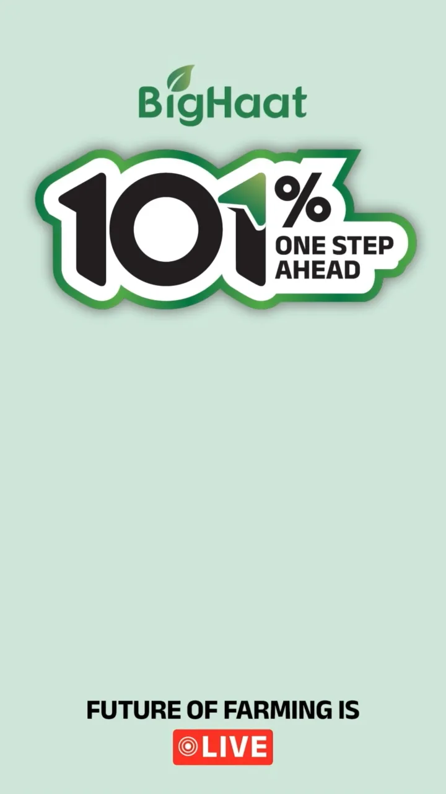
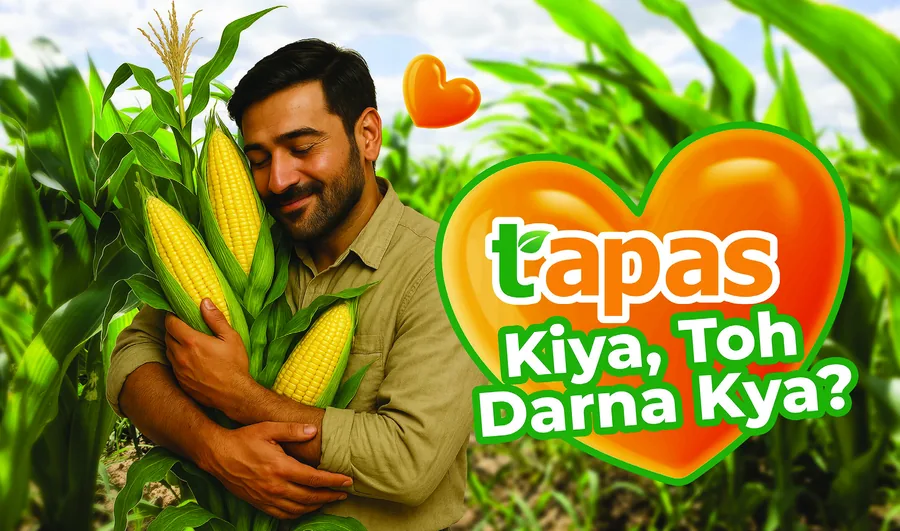

BigHaat · 2024–2026101%
A Step
Ahead
BigHaat's competitors all promise 100%. I wrote the platform idea and the copy system that carried it from app splash screen to carton print.

BigHaat is an agri-tech company: it sells farm inputs, seed, crop care, nutrients, and, more importantly, the services around them. Soil testing, agronomy advice, expert access, the right product for that week's problem. The category, meanwhile, argues on one note: every brand promises 100%. The best seed, the best price, the best product. The farmer has heard it from a dealer he can look in the eye.
So the brief wasn't to shout louder. It was to make the service layer the story, without inventing a product claim or leaning on fear. And it had to survive the whole rollout, from an app splash screen and a 1080×540 banner crop to a carton, a field standee and a laptop sticker, with the line still doing its job at every size.
Every brand promises 100%.
BigHaat gives the extra 1%.
The insight was arithmetic. If everyone claims 100%, the only position left is 101%, and it happens to describe what BigHaat actually does through its services: the agronomist who answers the call, the soil test before sowing, the advice that arrives before the problem does. The extra 1% became a badge, a fill-in-the-blank line that flexed to confidence, care, planning and friendship, and a system that could run for a season without a redesign.
- Communication framework: mental priming logic, narrative arc, a three-banner series, three push notifications written to title and CTA character limits, WhatsApp copy, a tagline bank and a designer-facing visual moodboard.
- App and web: app banner, web banner, referral banner, landing page, Agri-Store and Crop Care modules, PDP banner, order tracking, expert reach, three soil testing screens and two loading animations.
- Merchandise and giveaways: caps, laptop stickers, mugs, pens, umbrellas, badges, gloves, raincoat, field boots, torch, pocket diary, T-shirt, bag, wallet, system wallpaper and a birthday mailer.
- Internal posters for staff under lines such as '1% extra confidence' and '1% extra commitment, small progress daily creates big success'.
- On-ground and delivery: flex boards, standees, background banners, a theatre placement, plus carton print and package insert in Hindi and English carrying 'ek kadam aage', 'right price, right product, right result' and the three programme marks.







Client: BigHaat. Campaign creatives reproduced with permission. No performance data was available for this platform, so the deck's output is shown rather than claimed results.
Tapas, Kiya, Toh Darna Kya?
Tapas by BigHaat · 2025